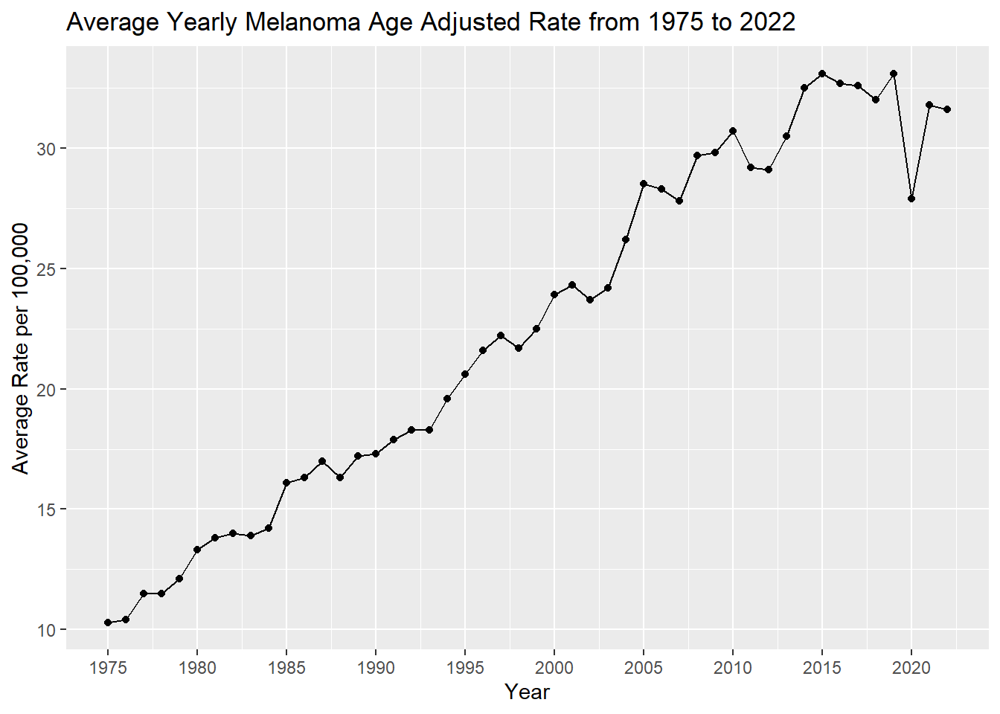
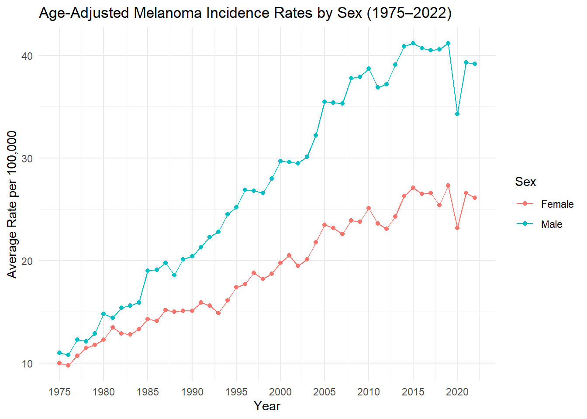
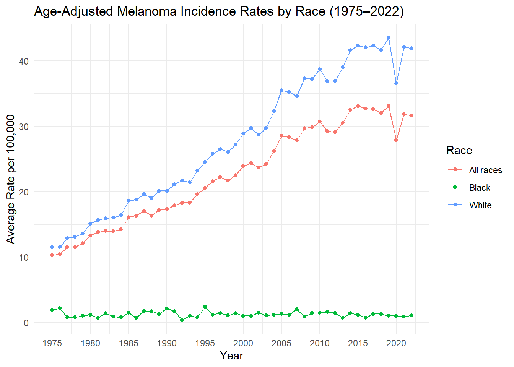
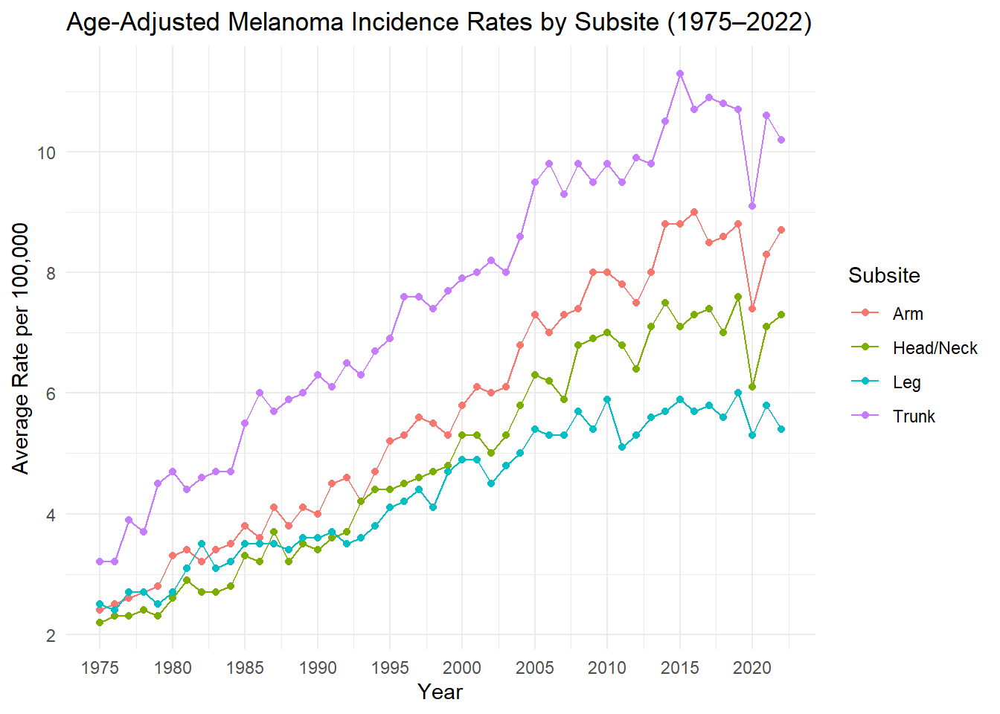
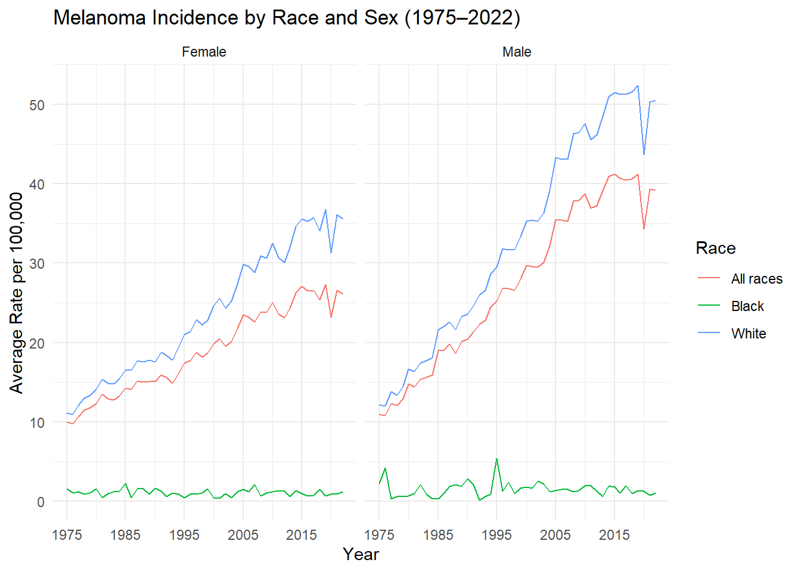
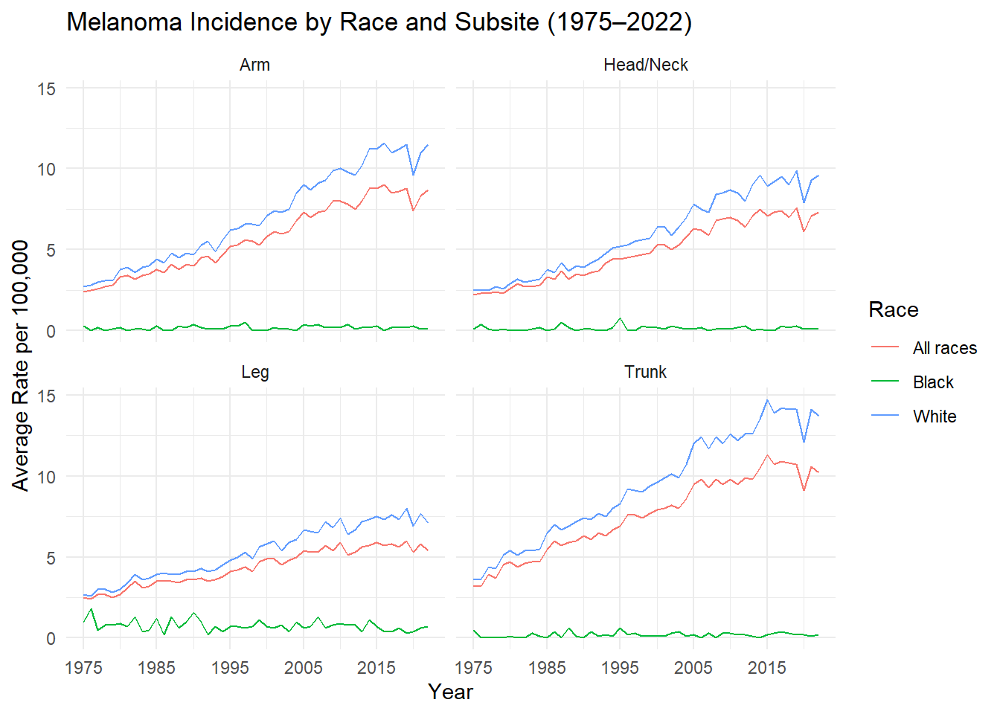

In class, we used SEER*Stat to access cancer incidence data for head and neck cancer. In this lab, you will do the same for a cancer of your choice. You are encouraged to continue to use this cancer in labs throughout the course as you build toward the final project, though you may switch at any time.
Learning objectives: - Determine the appropriate ICD codes, histologic codes, and any relevant subtypes of a cancer. - Utilize SEER*Stat to access data from the SEER cancer registry. - Visualize cancer incidence and trends by sex, race, and cancer subtype.
Task: Follow the steps outlined below, submit a PDF of our output (render as HTML and print the HTML to PDF) that answers the questions in bold below, including any supporting plots. You will be writing your own code for this lab but can use the code provided in Lab 1 as guidance. As with any lab, you may work in groups, but everyone should submit their own response and code, in their own words.
Criteria: This assignment will be graded on the correctness and completeness of the answers to the questions and on whether the plots are publication-ready, with easy-to-read text. Use reasonable significant digits (2-3 depending on the scale) when reporting numbers.
Steps
1
Decide on a cancer of interest. I generally recommend choosing a relatively broad category of cancers so that it has sufficient cases and has subtypes of interest. It is okay to choose a sex-specific cancer. I do not recommend leukemia or lymphoma, which have some tricky epidemiological patterns and subgroupings. To avoid substantial overlap within the class, we will have a sign-up.
Once you have confirmed your cancer type with me, do an abbreviated literature search on your cancer of interest (2-5 articles). Hint: search for “SEER” and [your cancer] in Google Scholar, as a starting point. Determine a standard set of ICD and histology codes. For example, for head and neck cancer, most cancers are squamous cell, so we could exclude or distinguish adenocarcinomas. Determine a set of subtypes of your cancer. For head and neck, I distinguished between oropharyngeal, non-oropharyngeal oral cavity, and non-oropharyngeal oral tongue because the epidemiology of these types is different. Or, for lung cancer, I might distinguish between small-cell and non-small-cell carcinomas. Determine how these subtypes are distinguished (e.g., ICD or histologic codes).
Q1: In a couple of paragraphs, describe the epidemiology of your cancer, including major risk factors, trends, and epidemiological patterns known in the literature. Report the ICD and histology codes and subtypes that you will be reporting on.
Answer: Melanoma is the most aggressive form of skin cancer, originating from melanocytes in the epidermis.Incidence has risen sharply over recent decades. This is increase in incidence is particularly in fair-skinned populations, this makes being fair-skinned a major risk factor(Culp MB et al., 2019). Another major risk factor is exposure to high levels of ultraviolet radiation. Epidemiological data show that melanoma is more common in individuals with lighter skin, a history of sunburns especially before the age of 20, numerous or atypical nevi, and a family history of melanoma, and age(Culp MB et al., 2019). Other risk factors include immunosuppression, indoor tanning, and genetic mutations such as CDKN2A and BRAF. While early detection has improved outcomes, concerns about overdiagnosis continues to be problematic. Currently, incidence continues to rise without a proportional increase in mortality. In the U.S., melanoma is more prevalent among non Hispanic whites and adults over the age of 50 years and is rare in children less than 15 years of age. Men overall show higher mortality rates. Based on lifetime risk statistics, White individuals have a melanoma risk ratio of approximately 26 to 1 compared to Black individuals. This is calculated using the American Cancer Society’s lifetime risk figures of 1 in 38 for White people and 1 in 1,000 for Black people (Culp MB et al., 2019). The most commonly reported histologic subtypes include superficial spreading melanoma, nodular melanoma, lentigo maligna melanoma, acral lentiginous melanoma, and desmoplastic melanoma. For surveillance and coding, melanoma is classified under ICD-O-3 histology codes: Histology codes 8720–8799 with behavior codes 2 (in situ) or 3 (malignant) (Zabor et al., 2021). Primary site codes for the skin C44.0–C44.7 are also during surveillance(Zabor et al., 2021). These codes encompass the major subtypes of melanoma and are used in cancer registries and epidemiological studies to track disease patterns and outcomes. This lab I did not include the histologic subtypes but did the primary sites. The primary sites were categorized based on primary site codes by atomical site as: head and neck, trunk, arms (shoulder to finger), or legs (hip to toes).
2
If you do not have a laptop capable of running SEER*Stat, share with a friend or join the queue for the laptop that I’ve brought.
Following the lecture slides, access age-adjusted rates for your cancer of interest by sex, race, and cancer subtype. Use the most recent data from SEER 8 (1975-), SEER 12 (1992-), SEER 17 (2000-) or SEER 22 (2000-). If you’ve picked a more common cancer, you can use a longer time series. If you’ve picked a less common cancer, you can use one of the larger collections with a shorter period. If you’re not sure which to use, you can try them all and see!
Be sure to save your session so that you can access or edit it in the future.
Also, save yourself some work for Lab 6 and now download a version of the data that also include the age at diagnosis variable as a Page variable.
Read your .csv file into R. It’ll need a little cleaning. Here’s the code that I used to clean my cancer data. You will need to make some adjustments for yours.
library(tidyverse)
── Attaching core tidyverse packages ──────────────────────── tidyverse 2.0.0 ──
✔ dplyr 1.1.4 ✔ readr 2.1.5
✔ forcats 1.0.0 ✔ stringr 1.5.1
✔ lubridate 1.9.4 ✔ tibble 3.3.0
✔ purrr 1.1.0 ✔ tidyr 1.3.1
── Conflicts ────────────────────────────────────────── tidyverse_conflicts() ──
✖ dplyr::filter() masks stats::filter()
✖ dplyr::lag() masks stats::lag()
ℹ Use the conflicted package (<http://conflicted.r-lib.org/>) to force all conflicts to become errors
library(ggplot2)library(dplyr) data=read.csv("Melanoma.csv",header=TRUE)colnames(data)=c("Race","Sex","Subsite","Year","Rate","Cases","Pop")# # #Remove the year range data_melanoma <- data|>filter(Year !="1975-2022")data_melanoma$Rate =as.numeric(as.character(data_melanoma$Rate))
Warning: NAs introduced by coercion
data_melanoma$Year =as.numeric(as.character(data_melanoma$Year))# #Example: Subset to the overalldata_melanoma_overall <- data_melanoma %>%filter( Race =="All races", Sex =="Male and female", Subsite %in%c("Head and Neck Anatomic site of Melanoma", "Trunk Anatomic site of Melanoma", "Arm (shoulder to finger) Anatomic site of Melanoma", "Leg (hip to toe) Anatomic site of Melanoma")) %>% dplyr::select(Year, Rate, Cases, Pop) data_melanoma_overall_combined = data_melanoma_overall %>%group_by(Year) %>%summarise(total_cases =sum(Cases, na.rm =TRUE),total_rate =sum(Rate, na.rm =TRUE),.groups ="drop")ggplot(data_melanoma_overall_combined, aes(x = Year, y = total_rate)) +geom_line() +geom_point() +labs(title ="Average Yearly Melanoma Age Adjusted Rate from 1975 to 2022 ",x ="Year",y ="Average Rate per 100,000") +scale_x_continuous(breaks =seq(1975, 2025, by =5))

Using ggplot2 in R, create a set of graphs to visualize the age adjusted incidence rates overall, by sex, race, and subtype, and for some combinations. I will not specify a set of graphs, so it is up to you to concisely tell a story. Do not simply dump a separate graph for each combination of sex, race, and subtype; consider carefully which subgroups should be compared on the same graph vs should be displayed in separate graphs. It will help to think about the epidemiology of your cancer: Which is the most important covariate? For which groups might there be disparities that are important to consider?
Maybe sex for each subtype or race for each subtype think about if i were preparing a report, to convye the important information. whats the most improtant covariate where are the disparities
# age adjusted incidence rates by sexdata_melanoma$Rate =as.numeric(as.character(data_melanoma$Rate)) data_melanoma$Year =as.numeric(as.character(data_melanoma$Year)) # Filter for relevant subsites and races, but keep Sex as a variabledata_melanoma_by_sex <- data_melanoma |>filter( Race =="All races", Sex %in%c("Male", "Female"), Subsite %in%c("Head and Neck Anatomic site of Melanoma","Trunk Anatomic site of Melanoma","Arm (shoulder to finger) Anatomic site of Melanoma","Leg (hip to toe) Anatomic site of Melanoma" )) %>% dplyr::select(Year, Rate, Sex, Cases, Pop)# Group and summarize by Year and Sex data_melanoma_by_sex_summary = data_melanoma_by_sex %>%group_by(Year, Sex) %>%summarise(total_cases =sum(Cases, na.rm =TRUE),total_rate =sum(Rate, na.rm =TRUE),.groups ="drop")# Plot age-adjusted incidence rates by sexggplot(data_melanoma_by_sex_summary, aes(x = Year, y = total_rate, color = Sex)) +geom_line() +geom_point() +labs(title ="Age-Adjusted Melanoma Incidence Rates by Sex (1975–2022)",x ="Year",y ="Average Rate per 100,000", color ="Sex") +scale_x_continuous(breaks =seq(1975, 2025, by =5)) +theme_minimal()

# age adjusted incidence rates by race# Convert columns to numericdata_melanoma$Rate <-as.numeric(as.character(data_melanoma$Rate))data_melanoma$Year <-as.numeric(as.character(data_melanoma$Year))# Filter for relevant subsites and sexes, but keep Race as a variabledata_melanoma_by_race <- data_melanoma |>filter( Sex =="Male and female", Race %in%c("White", "Black", "All races"), Subsite %in%c("Head and Neck Anatomic site of Melanoma","Trunk Anatomic site of Melanoma","Arm (shoulder to finger) Anatomic site of Melanoma","Leg (hip to toe) Anatomic site of Melanoma" )) %>% dplyr::select(Year, Rate, Race, Cases, Pop)# Group and summarize by Year and Racedata_melanoma_by_race_summary <- data_melanoma_by_race |>group_by(Year, Race) |>summarise(total_cases =sum(Cases, na.rm =TRUE),total_rate =sum(Rate, na.rm =TRUE),.groups ="drop")# Plot age-adjusted incidence rates by raceggplot(data_melanoma_by_race_summary, aes(x = Year, y = total_rate, color = Race)) +geom_line() +geom_point() +labs(title ="Age-Adjusted Melanoma Incidence Rates by Race (1975–2022)",x ="Year",y ="Average Rate per 100,000", color ="Race" ) +scale_x_continuous(breaks =seq(1975, 2025, by =5)) +theme_minimal()

#age adjusted incidence rates by subsite# Convert columns to numericdata_melanoma$Rate <-as.numeric(as.character(data_melanoma$Rate))data_melanoma$Year <-as.numeric(as.character(data_melanoma$Year))# Filter for relevant races and sexes, but keep Subsite as a variabledata_melanoma_by_subsite <- data_melanoma |>filter( Race =="All races", Sex =="Male and female", Subsite %in%c("Head and Neck Anatomic site of Melanoma","Trunk Anatomic site of Melanoma","Arm (shoulder to finger) Anatomic site of Melanoma","Leg (hip to toe) Anatomic site of Melanoma")) %>% dplyr::select(Year, Rate, Subsite, Cases, Pop)#Rename subsite to a more condensed form for nicer plotting legenddata_melanoma_by_subsite <- data_melanoma_by_subsite |>mutate(Subsite =recode(Subsite,"Head and Neck Anatomic site of Melanoma"="Head/Neck","Trunk Anatomic site of Melanoma"="Trunk","Arm (shoulder to finger) Anatomic site of Melanoma"="Arm","Leg (hip to toe) Anatomic site of Melanoma"="Leg"))# Group and summarize by Year and Subsitedata_melanoma_by_subsite_summary <- data_melanoma_by_subsite |>group_by(Year, Subsite) |>summarise(total_cases =sum(Cases, na.rm =TRUE),total_rate =mean(Rate, na.rm =TRUE),.groups ="drop")# Plot age-adjusted incidence rates by subsiteggplot(data_melanoma_by_subsite_summary, aes(x = Year, y = total_rate, color = Subsite)) +geom_line() +geom_point() +labs(title ="Age-Adjusted Melanoma Incidence Rates by Subsite (1975–2022)",x ="Year",y ="Average Rate per 100,000",color ="Subsite") +scale_x_continuous(breaks =seq(1975, 2025, by =5)) +theme_minimal()

#age adjusted incidence rates by race and sex# Filter and cleandata_melanoma$Rate <-as.numeric(as.character(data_melanoma$Rate))data_melanoma$Year <-as.numeric(as.character(data_melanoma$Year))data_melanoma_race_sex <- data_melanoma |>filter( Race %in%c("White", "Black", "All races"), Sex %in%c("Male", "Female"), Subsite %in%c("Head and Neck Anatomic site of Melanoma","Trunk Anatomic site of Melanoma","Arm (shoulder to finger) Anatomic site of Melanoma","Leg (hip to toe) Anatomic site of Melanoma")) %>% dplyr::select(Year, Rate, Race, Sex, Cases, Pop)# Group and summarize by Year and Subsitedata_melanoma_race_sex_summary <- data_melanoma_race_sex |>group_by(Year, Race, Sex) |>summarise(total_cases =sum(Cases, na.rm =TRUE),total_rate =sum(Rate, na.rm =TRUE),.groups ="drop")# Plotggplot(data_melanoma_race_sex_summary, aes(x = Year, y = total_rate, color = Race)) +geom_line() +facet_wrap(~Sex) +labs(title ="Melanoma Incidence by Race and Sex (1975–2022)",x ="Year",y ="Average Rate per 100,000", color ="Race") +scale_x_continuous(breaks =seq(1975, 2025, by =10)) +theme_minimal()

# age adjusted incidence rates by race and subsitedata_melanoma$Rate <-as.numeric(as.character(data_melanoma$Rate))data_melanoma$Year <-as.numeric(as.character(data_melanoma$Year))data_melanoma_race_subsite <- data_melanoma |>filter( Race %in%c("White", "Black", "All races"), Sex =="Male and female", Subsite %in%c("Head and Neck Anatomic site of Melanoma","Trunk Anatomic site of Melanoma","Arm (shoulder to finger) Anatomic site of Melanoma","Leg (hip to toe) Anatomic site of Melanoma")) %>% dplyr::select(Year, Rate, Race, Subsite, Cases, Pop)#Rename subsite to a more condensed form for nicer plotting legenddata_melanoma_race_subsite <- data_melanoma_race_subsite |>mutate(Subsite =recode(Subsite,"Head and Neck Anatomic site of Melanoma"="Head/Neck","Trunk Anatomic site of Melanoma"="Trunk","Arm (shoulder to finger) Anatomic site of Melanoma"="Arm","Leg (hip to toe) Anatomic site of Melanoma"="Leg")) # Group and summarize by Year and Subsitedata_melanoma_race_subsite_summary <- data_melanoma_race_subsite |>group_by(Year, Race, Subsite) |>summarise(total_cases =sum(Cases, na.rm =TRUE),total_rate =sum(Rate, na.rm =TRUE),.groups ="drop")# Plot incidence by race and subsiteggplot(data_melanoma_race_subsite_summary, aes(x = Year, y = total_rate, color = Race)) +geom_line() +facet_wrap(~Subsite) +labs(title ="Melanoma Incidence by Race and Subsite (1975–2022)",x ="Year",y ="Average Rate per 100,000", color ="Race") +scale_x_continuous(breaks =seq(1975, 2025, by =10)) +theme_minimal()

Q2: Describe the incidence and trends in your cancer. What are the important heterogeneities by sex, race, and subtype? Does combing subgroups mask trends (e.g., men increasing, women decreasing so flat overall)? How are the trends for sex × race similar or different from what you would expect from the marginal trends? How similar or different are the trends by race and sex across subtypes? Don’t overwhelm me with a data dump and pages upon pages of graphs. Tell a clear and concise story, as if you were preparing a publication with a word and figure limit.
Answer: The overall incidence and trends of melanoma from 1975 to 2022 is that it has been steadily increasing. In 1975 the overall age adjusted incidence rate was 2.6 per 100,000 persons, in 2022 the overall age adjusted incidence rate was 7.9 per 100,000 person. The upward trend could be due to an increase in screening and better detection methods. An observation to also make on all of the plots is the sharp decrease in 2020. This decrease is due to the COVID-19 pandemic, where routine screening was discouraged for a period of time to prevent the spread of COVID-19. Important heterogeneities we see when we stratifiy by sex is that men have a higher age adjusted incidence rate compare to women. In 1975 men and women have a similar rate, however in 2022 men are just under double that of women for incidences. This is due to the steady increase from around 2010 men keep while women seem to plateu. This is odd due to the trend of tanning beds that occured in the late 1990’s to early 2000’s, where women were more likely to participate in this trend leading to increase exposure to UV light, a known risk factor as stated above. Important heterogeneitites when we stratify by race is that whites have the highest age adjusted rate, with “all races” which contain other races slightly below them. These two races started at a compareable incidence rate, and steadily increase at a pretty comparable slope. However when examiming black incidence rates, there has been very little change from the inital age adjusted rate of 0.5 per 100,000 people to 2022 which was 0.3 per 100,000 people. Another observation is that when looking at all races it isnt that much lower even though black is so drastically low. This indicates that the “other” race has a incidence close to whites. Important heterogeneities when we stratify by subsite is that the anitomical region with the highest incidece is the trunk. This was the case over the 48 year data collection. The three other regions arm, head and neck, and leg, all stay within 4 age adjusted incidence rates of eachother. This is a little surpriseing. Due to clothing the trunk is one of the most overed areas of the body especially in women. Men do tend to not wear shirts while participating in water activities but otherwise a majority of the time are protected from UV light via clothing. I was expecting to see a high rate in arms and head and neck due to the lack of coverage by clothes. When analysing the sex and race plots I feel that the marginal trends are very comparable to joint trends. White women and men have the highest age adjusted rate. One think to notice in these trends is that black males and females are both at incidence rate that are around 0.5 per 100,000 persons, there does not appear to be a significant difference amounst the sexes for black individuals. On graph that I wanted to do was to stratify race and subsite. There are two observations that stuck out to me. 1) the trunk region for whites is by far increasing the fastest and has the highest age adjusted rate 14.7 per 100,000 people in 2015. 2) Looking at the leg region, blacks have douple their incidence from around 0.5 per 100,000 people to around 1.0 per 100,000 people throughout the 48 year period. This is such an interesting finding. The leg region when stratified by only subsite is the lowest region for incidences, however it is the highest for black individuals. This could be due to this part of their body being the most exposed to UV light, or maybe it has something to do with the biology of the melatonin in the skin in that region. This would be an item that needs a more indepth analysis. However when looking at all the trends it is clear that a target population would be most effective in men. Educating them about the potential dangers of sun burns of their trunk region and offering sunscreen could be a potential intervention.